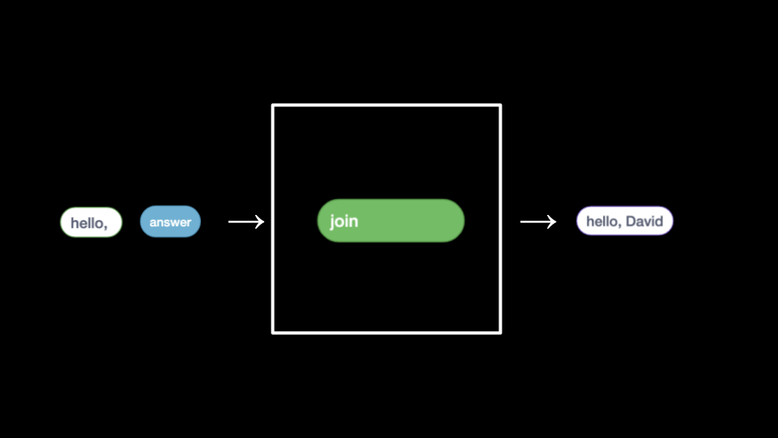

讲座 0
- 欢迎!
- Visual Studio Code 与 chat.py
- 计算机科学与问题解决
- ASCII
- Unicode
- RGB
- 算法
- 伪代码
- 后续展望
- Scratch
- Hello World
- Hello，你
- 喵叫、循环与抽象
- 条件语句
- Oscartime
- Ivy’s Hardest Game
- 总结
欢迎!
- 人工智能 (AI) 正在为计算机科学和广阔世界带来新的进步和激动人心的成果！
- 虽然 AI 带来了巨大的进步，有时能够消除减缓流程的人为瓶颈，但能够理解、创建和组织代码让你成为通过编程驱动的驾驭者、飞行员、有能力的创造者。
- 因此，与其将 AI 视为消除学习基础知识需求的方式，不如思考一下，掌握基础知识并借助 AI 进一步增强能力，将为你和你所服务的人群带来全新的机遇。
Visual Studio Code 与 chat.py
- VS Code 是一个 IDE，即集成开发环境，可以在其中创建代码。
- 为了让你提前感受即将到来的内容，我们可以编写自己的聊天机器人，命名为
chat.py。 - 在已配置好 OpenAI 库的系统上，我们可以按如下方式编程。
-
在文本编辑器中，可以键入以下代码：
from openai import OpenAI client = OpenAI() response = client.responses.create( input="In one sentence, what is CS50?", model="gpt-5" ) print(response.output_text)注意，我们从 OpenAI 导入了一个库来获得该库的功能。一个聊天客户端被创建。然后，一个问题，称为
input，被传递给聊天client以获取答案。随后response被打印出来。 -
我们可以改进此代码，允许用户提问。按如下方式修改你的代码：
from openai import OpenAI client = OpenAI() prompt = input("Prompt: ") response = client.responses.create( input=prompt, model="gpt-5" ) print(response.output_text)注意，
prompt现在被创建，允许用户提问。 -
更进一步，这个程序可以通过提供一个
system_prompt来为聊天机器人提供进一步的上下文和指令来改进：from openai import OpenAI client = OpenAI() user_prompt = input("Prompt: ") system_prompt = "Limit your answer to one sentence. Pretend you're a cat." response = client.responses.create( input=user_prompt, instructions=system_prompt, model="gpt-5" ) print(response.output_text)注意，
system_prompt用于提供进一步的上下文和指令。 - 通过编程，你能够用十行文本构建出非常强大的程序！
- 我们创建了自己的橡皮鸭，CS50 Duck，来帮助你在本课程中获得帮助。
- 请牢记我们的学术诚信政策，它禁止使用除了 CS50 Duck 之外的任何 AI 工具。
计算机科学与问题解决
-
本质上，计算机编程就是接收一些输入并创建一些输出——从而解决问题。在输入和输出之间发生的事情，我们可以称之为黑盒子，这正是本课程的重点。
flowchart LR in["input"] --> BOX[" ??? "] BOX --> out["output"] - 例如，我们可能需要对班级进行考勤。我们可以使用一种称为一元（也叫一进制）的系统，一次数一根手指。
- 如今的计算机使用一种称为二进制（也叫二进制）的系统来计数。从二进制数字这个术语中，我们得到了一个熟悉的术语叫比特。一个比特是零或一：开或关。
- 计算机只能通过零和一来表示。零代表关。一代表开。计算机中有数百万甚至数十亿个不断开关的晶体管。
- 想象一下用一个灯泡，单个灯泡只能从零数到一。
- 然而，如果你有三个灯泡，你就有更多选项可以使用了！
- 在你的设备内部，比如你的 iPhone 或电脑，有着数百万个隐喻性的灯泡，称为晶体管，它们使得你在这些设备上每天习以为常的活动成为可能。
-
作为一种启发式方法，我们可以想象以下值代表二进制数字中每个可能的位置：
4 2 1 -
使用三个灯泡，以下可以表示零：
4 2 1 0 0 0 -
类似地，以下表示一：
4 2 1 0 0 1 -
按此逻辑，我们可以推断以下等于二：
4 2 1 0 1 0 -
进一步延伸此逻辑，以下表示三：
4 2 1 0 1 1 -
四会显示为：
4 2 1 1 0 0 -
事实上，仅使用三个灯泡我们就可以数到七！
4 2 1 1 1 1 -
计算机使用二进制（base-2）来计数。可以如下图所示：
2^2 2^1 2^0 4 2 1 - 因此，可以说需要用三个比特（四位、二位和一位的位置）来表示高达七的数字。
-
类似地，要表示高达八的数字，值将如下表示：
8 4 2 1 1 0 0 0 -
计算机通常使用八个比特（也称为一个字节）来表示一个数字。例如，
00000101是二进制中的数字 5。11111111表示数字 255。你可以将零想象如下：128 64 32 16 8 4 2 1 0 0 0 0 0 0 0 0
ASCII
- 就像数字是用零和一组成的二进制模式一样，字母也是用零和一表示的！
- 由于表示数字和字母的零和一之间存在重叠，ASCII 标准被创建出来，将特定字母映射到特定数字。
-
例如，字母
A被决定映射到数字 65。01000001在二进制中表示数字 65。你可以这样可视化：128 64 32 16 8 4 2 1 0 1 0 0 0 0 0 1 -
如果你收到一条短信，消息底层的二进制可能表示数字 72、73 和 33。将这些映射到 ASCII，你的消息将如下所示：
H I ! 72 73 33 - 感谢像 ASCII 这样的标准，让我们能够就这些值达成一致！
-
以下是 ASCII 值的扩展映射表：
0 NUL 16 DLE 32 SP 48 0 64 @ 80 P 96 ` 112 p 1 SOH 17 DC1 33 ! 49 1 65 A 81 Q 97 a 113 q 2 STX 18 DC2 34 ” 50 2 66 B 82 R 98 b 114 r 3 ETX 19 DC3 35 # 51 3 67 C 83 S 99 c 115 s 4 EOT 20 DC4 36 $ 52 4 68 D 84 T 100 d 116 t 5 ENQ 21 NAK 37 % 53 5 69 E 85 U 101 e 117 u 6 ACK 22 SYN 38 & 54 6 70 F 86 V 102 f 118 v 7 BEL 23 ETB 39 ’ 55 7 71 G 87 W 103 g 119 w 8 BS 24 CAN 40 ( 56 8 72 H 88 X 104 h 120 x 9 HT 25 EM 41 ) 57 9 73 I 89 Y 105 i 121 y 10 LF 26 SUB 42 * 58 : 74 J 90 Z 106 j 122 z 11 VT 27 ESC 43 + 59 ; 75 K 91 [ 107 k 123 { 12 FF 28 FS 44 , 60 < 76 L 92 \ 108 l 124 | 13 CR 29 GS 45 - 61 = 77 M 93 ] 109 m 125 } 14 SO 30 RS 46 . 62 > 78 N 94 ^ 110 n 126 ~ 15 SI 31 US 47 / 63 ? 79 O 95 _ 111 o 127 DEL - 如果你想了解更多，可以学习关于 ASCII 的知识。
- 如果每个字符存储在恰好一个 8 比特字节中，你最多可以编码 256 个不同的字符码。ASCII 只使用了其中 128 个 (0-127)。
Unicode
- 随着时间的推移，通过文本进行交流的方式越来越多。
- 由于二进制中没有足够的位数来表示人类可以表示的所有各种字符，Unicode 标准扩展了可以被计算机传输和理解的比特数量。Unicode 不仅包含特殊字符，还包含表情符号。
-
有一些表情符号你可能每天都在使用。以下对你来说可能很熟悉：
😀 😃 😄 😁 😆 😅 😂 🙂 🙃 😉 😊 😇 😍 😘 😗 😙 😚 😋 😛 😜 😝 🤑 🤓 😎 🤗 😏 😶 😐 😑 😒 🙄 😬 😕 ☹️ 😟 😮 😯 😲 😳 😦 😧 😨
- 虽然零和一的模式在 Unicode 中是标准化的，但每个设备制造商显示每个表情符号的方式可能与其他制造商略有不同。
- 越来越多的特性正在被添加到 Unicode 标准中，以表示更多的字符和表情符号。
- 如果你想了解更多，可以学习关于 Unicode 的知识。
- 如果你想了解更多，可以学习关于 emoji 的知识。
RGB
- 零和一可以用来表示颜色。
-
红色、绿色和蓝色（称为
RGB）是三个数字的组合。72 73 33
-
以我们之前使用的 72、73 和 33 为例，这些数字通过文本表示
HI!，但会被图像阅读器解释为一种浅黄色。红色值为 72，绿色值为 73，蓝色值为 33。 - 表示红色、蓝色和绿色（即 RGB）各种颜色所需的三个比特组成了任何数字图像中每个像素（或点）的颜色。图像就是 RGB 值的集合。
- 零和一可以用来表示图像、视频和音乐！
- 视频是许多图像按顺序存储在一起的序列，就像翻页书一样。
- 音乐也可以通过各种字节组合类似地表示。
算法
- 解决问题是计算机科学和计算机编程的核心。算法是逐步解决问题的指令集。
- 想象一个基本问题：试图在电话簿中找到一个名字。
- 你会怎么做？
- 一种方法可以是简单地从第一页读到下一页再到下一页，直到到达最后一页。
- 另一种方法可以是一次搜索两页。
- 最后一种可能更好的方法是走到电话簿的中间，然后问：”我要找的名字在左边还是右边？”然后重复这个过程，将问题一分为二、再二、再二。
-
这些方法中的每一种都可以称为算法。每种算法的速度可以如下所示，用所谓的大 O 表示法来表示：
请注意，第一个算法（红色高亮）的大 O 是
n，因为如果电话簿中有 100 个名字，可能需要多达 100 次尝试才能找到正确的名字。第二个算法，一次搜索两页，大 O 是n/2，因为我们翻页的速度快了一倍。最后一个算法的大 O 是 log2n，因为将问题翻倍只会导致多一步来解决问题。 - 程序员将基于文本的人类指令翻译成代码来解决问题。
伪代码
- 伪代码是人类可读的指令，通常描述算法的步骤。
- 创建伪代码的能力对于你在这门课和计算机编程中取得成功至关重要。
-
例如，考虑上面第三种算法，我们可以编写如下伪代码：
1 Pick up phone book 2 Open to middle of phone book 3 Look at page 4 If person is on page 5 Call person 6 Else if person is earlier in book 7 Open to middle of left half of book 8 Go back to line 3 9 Else if person is later in book 10 Open to middle of right half of book 11 Go back to line 3 12 Else 13 Quit - 编写伪代码是一项非常重要的技能，至少有两个原因。第一，当你在创建正式代码之前编写伪代码时，它可以让你提前理清问题的逻辑。第二，当你编写伪代码后，以后你可以将这些信息提供给那些希望理解你的编码决策以及你的代码如何工作的人。
- 请注意，我们伪代码中的语言具有一些独特的特征。首先，其中一些行以动词开头，如拿起、打开、看。稍后我们将这些称为函数。
- 第二，请注意有些行包含像
if或else if这样的语句。这些称为条件语句。 - 第三，请注意有一些表达式可以表示为真或假，例如”person is earlier in the book”。我们称这些为布尔表达式。
- 最后，请注意有些语句如”返回第 3 行”。我们称这些为循环。
- 这些构建块是编程的基础。
- 在下面将要讨论的 Scratch 的背景下，我们将使用上述每种编程基本构建块。
后续展望
- 本周你将学习 Scratch，一种可视化编程语言。
-
然后，在后续几周中，你将学习 C。它大致看起来像这样：
#include <stdio.h> int main(void) { printf("hello, world\n"); } - 通过学习 C，你将更充分地为未来学习其他编程语言（如 Python）做好准备。
- 请注意，程序员是如何使用抽象来构建在其他程序员工作之上的。编程语言不是为了用零和一编程而创建的，而是将极其困难的二进制编程任务抽象出来，转化为越来越易于使用的编程语言。我们可以站在前人的肩膀上！
Scratch
- Scratch 是 MIT 开发的可视化编程语言。
- Scratch 使用了我们本课前面介绍过的相同基本编码构建块。
- Scratch 是入门计算机编程的绝佳方式，因为它让你以可视化的方式使用这些构建块，不必担心花括号、分号、括号等语法。
-
Scratch
IDE（集成开发环境）如下所示：
请注意，左侧有一个构建块调色板，你可以在编程中使用。在构建块的右侧是你可以拖放块来构建程序的区域。再往右，你看到的是猫站立的舞台。舞台是你的编程变得生动起来的地方。
-
Scratch 基于以下坐标系运行：

请注意，舞台中心位于坐标 (0,0)。现在，猫的位置就在那个位置。
你好 世界
-
首先，将”当绿旗被点击”构建块拖到编程区域。然后，将
say构建块拖到编程区域并将其附加到上一个块上。when green flag clicked say [hello, world]请注意，当你在舞台上点击绿旗时，猫会说”你好，世界。”
-
这很好地说明了我们之前讨论的关于编程的内容：

请注意，输入
hello, world被传递给函数say，该函数运行的副作用就是猫说出hello, world。
你好, You
-
我们可以让猫对特定的人说
hello，使你的程序更具交互性。按如下方式修改你的程序：when green flag clicked ask [What's your name?] and wait say (join [hello,] (answer))请注意，当点击绿旗时，函数
ask被运行。程序提示你（用户）What's your name?然后将该名字存储在称为answer的变量中。程序接着将answer传递给一个名为join的特殊函数，它将两个文本字符串hello和提供的任何名字组合起来。answer的值作为参数传递给join。这些整体被传递给say函数。猫说，Hello,加一个名字。你的程序现在具有交互性。 -
在整个课程中，你将不断向算法提供输入并获得输出。以上述程序为例，可以这样表述：

请注意，输入
hello,和answer被提供给join，后者返回hello, David。这个返回值接着被传递给say，产生猫说话的副作用。 -
非常类似地，我们可以按如下方式修改程序：
when green flag clicked ask [What's your name?] and wait speak (join [hello,] (answer))请注意，此程序在点击绿旗时，将相同的变量与
hello组合后传递给名为speak的函数。
喵叫、循环与抽象
- 与伪代码编写一样，抽象是计算机编程中一项重要的技能和概念。
- 抽象是将问题简化为越来越小的问题的行为。
- 例如，如果你要为朋友们举办一场盛大的晚餐，需要烹饪整顿饭的问题可能会非常令人不知所措！但如果你将烹饪任务分解成越来越小的任务（或问题），制作这顿美味大餐的大任务可能就不那么具有挑战性了。
-
在编程中，甚至在 Scratch 中，我们可以看到抽象的实际运用。在你的编程区域中，按如下方式编程：
when green flag clicked play sound (Meow v) until done wait (1) seconds play sound (Meow v) until done wait (1) seconds play sound (Meow v) until done请注意，你在反复做同样的事情。事实上，如果你发现自己反复编写相同的语句，很可能你可以用更巧妙的方式编程——将这些重复的代码抽象化。
-
你可以按如下方式修改代码：
when green flag clicked repeat (3) play sound (Meow v) until done wait (1) seconds请注意，循环的作用与上一个程序完全一样。但是，通过将重复抽象为一个为我们重复代码的块，问题被简化了。
-
我们甚至可以通过使用
define块进一步推进，你可以创建自己的块（你自己的函数）！编写如下代码：define meow play sound (Meow v) until done wait (1) seconds when green flag clicked repeat (3) meow请注意，我们正在定义自己的块，名为
meow。该函数播放meow声音，然后等待一秒。在下方，你可以看到当绿旗被点击时，我们的 meow 函数被重复了三次。 -
我们甚至可以让该函数接收一个输入
n并重复指定的次数：define meow n times repeat (n) play sound [meow v] until done wait (1) seconds请注意，
n是从 “meow n times” 中获取的。n通过define块传递给 meow 函数。 - 总体而言，请注意这个精炼过程是如何导向越来越好的代码设计的。此外，请注意我们是如何创建自己的算法来解决问题的。你将在整个课程中锻炼这两种技能。
条件语句
- 条件语句是编程的重要构建块，程序会检查特定条件是否满足。如果条件满足，程序会执行某个操作。
-
为了演示条件语句，编写如下代码：
when green flag clicked forever if <touching (mouse-pointer v)?> then play sound (Meow v) until done请注意，
forever块被使用，使得if块被反复触发，以持续检查猫是否触碰了鼠标指针。 -
我们可以按如下方式修改程序以集成视频感应：
when video motion > (10) play sound (Meow v) until done - 记住，编程通常是一个试错的过程。如果你感到沮丧，花时间对自己梳理手头的问题。你当前正在解决的具体问题是什么？什么在起作用？什么没有起作用？
Oscartime
-
Oscartime 是 David 自己的 Scratch 程序之一——尽管那段音乐可能会萦绕着他，因为他制作这个程序时听了太多遍。花几分钟自己玩一下 Oscartime 游戏。
-
要亲手构建 Oscartime，我们首先添加路灯。

-
然后，编写如下代码：
when green flag clicked switch costume to (oscar1 v) forever if <touching (mouse-pointer v)?> then switch costume to (oscar2 v) else switch costume to (oscar1 v)请注意，将鼠标移动到 Oscar 上会改变他的造型。你可以通过探索这些代码块了解更多。
-
然后，按如下方式修改代码以创建一片下落的垃圾：
when green flag clicked set drag mode [draggable v] go to x: (pick random (0) to (240)) y: (180) forever change y by (-1) end请注意，垃圾在 y 轴上的位置始终从 180 开始。x 位置是随机的。当垃圾在地面上方时，它每次向下移动 1 像素。你可以通过探索这些代码块了解更多。
-
接下来，按如下方式修改代码以允许拖动垃圾的可能性。
when green flag clicked forever if <touching [Oscar v] ?> then go to x: (pick random (0) to (240)) y: (180) end end你可以通过探索这些代码块了解更多。
-
接下来，我们可以按如下方式实现计分变量：
when green flag clicked set drag mode [draggable v] go to top forever change y by (-1) endwhen green flag clicked forever if <touching [Oscar v] ?> then go to top end enddefine go to top go to x: (pick random (0) to (240)) y: (180)你可以通过探索这些代码块了解更多。
-
去试试完整游戏 Oscartime 吧。
Ivy 的最难游戏
- 从 Oscartime 转向 Ivy 的最难游戏，我们现在可以设想如何在程序中实现移动。
- 我们的程序有三个主要组件。
-
首先，编写如下代码：
when green flag clicked go to x: (0) y: (0) forever listen for keyboard feel for walls请注意，当点击绿旗时，我们的精灵移动到舞台中心坐标 (0,0)，然后持续监听键盘并检查墙壁。
-
第二，添加这组代码块：
define listen for keyboard if <key (up arrow v) pressed?> then change y by (1) end if <key (down arrow v) pressed?> then change y by (-1) end if <key (right arrow v) pressed?> then change x by (1) end if <key (left arrow v) pressed?> then change x by (-1) end请注意我们如何创建了一个自定义的
listen for keyboard脚本。对于键盘上的每个方向键，它将移动屏幕上的精灵。 -
最后，添加这组代码块：
define feel for walls if <touching (left wall v) ?> then change x by (1) end if <touching (right wall v) ?> then change x by (-1) end请注意，我们还有一个自定义的
feel for walls脚本。当精灵触碰到墙壁时，它将精灵移回安全位置——防止它走出屏幕。 - 你可以通过探索这些代码块了解更多。
- Scratch 允许屏幕上同时存在许多精灵。
-
添加另一个精灵，将以下代码块添加到程序中：
when green flag clicked go to x: (0) y: (0) point in direction (90) forever if <<touching (left wall v)?> or <touching (right wall v)?>> then turn right (180) degrees end move (1) steps end请注意，Yale 精灵似乎通过来回移动阻挡了 Harvard 精灵。当它撞到墙壁时，会转身直到再次撞到墙壁。你可以通过探索这些代码块了解更多。
-
你甚至可以让一个精灵跟随另一个精灵。添加另一个精灵，将以下代码块添加到程序中：
when green flag clicked go to (random position v) forever point towards (Harvard v) move (1) steps请注意，MIT 标志似乎现在跟着 Harvard 标志四处移动。你可以通过探索这些代码块了解更多。
- 去试试完整游戏 Ivy’s Hardest Game 吧。
总结
在这节课中，你了解了本课程在计算机科学和编程这个广阔世界中的位置。你学到了……
- 虽然 AI 可以帮助消除人为瓶颈，但学习计算机科学的基础知识和编程的基础构建块将使你更好地利用新兴技术。
- 在本课程中合理和不合理地使用 AI 的方式。
- 解决问题是计算机科学家工作的核心。
- 数字、文本、图像、音乐和视频如何被计算机理解和表示。
- 基本的编程技能——编写伪代码。
- 抽象将如何在你未来的课程学习中发挥作用。
- 编程的基本构建块，包括函数、条件语句、循环和变量。
- 如何在 Scratch 中构建一个项目。
这就是 CS50！欢迎登船！下次再见！